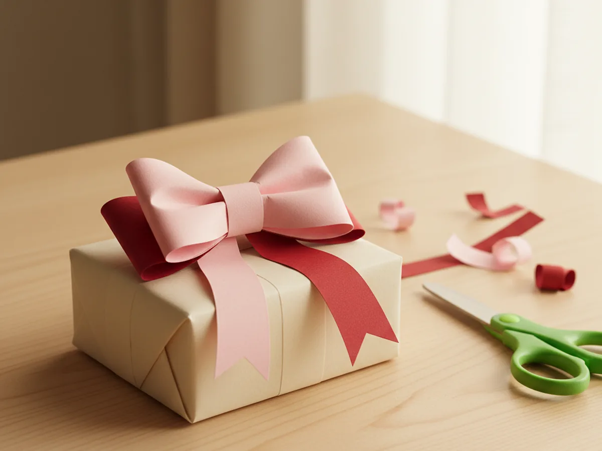
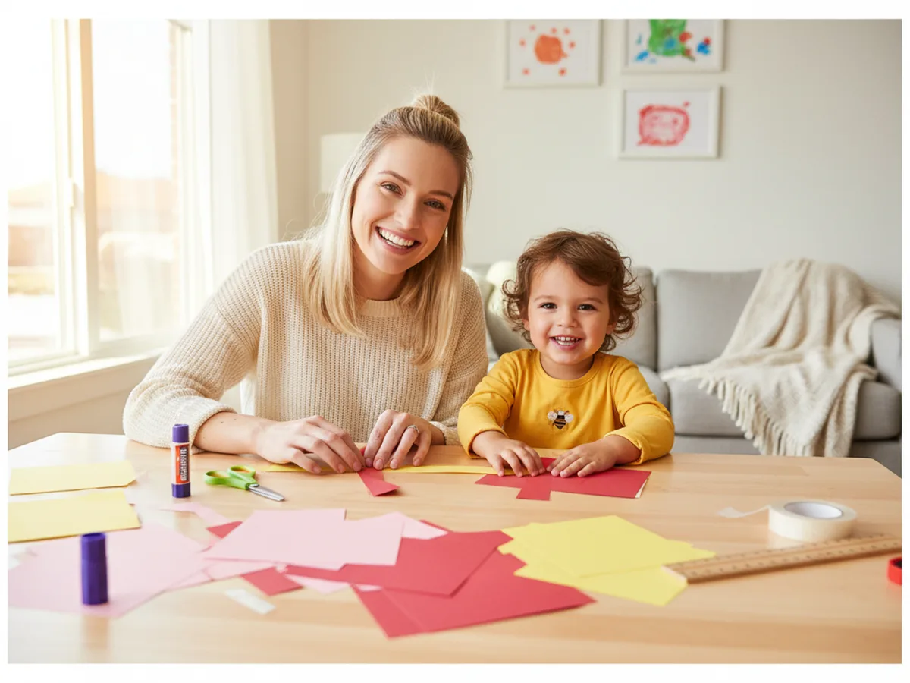
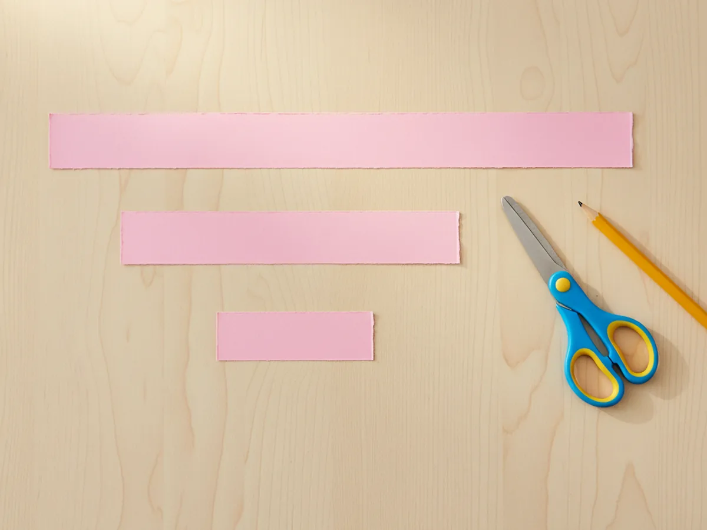
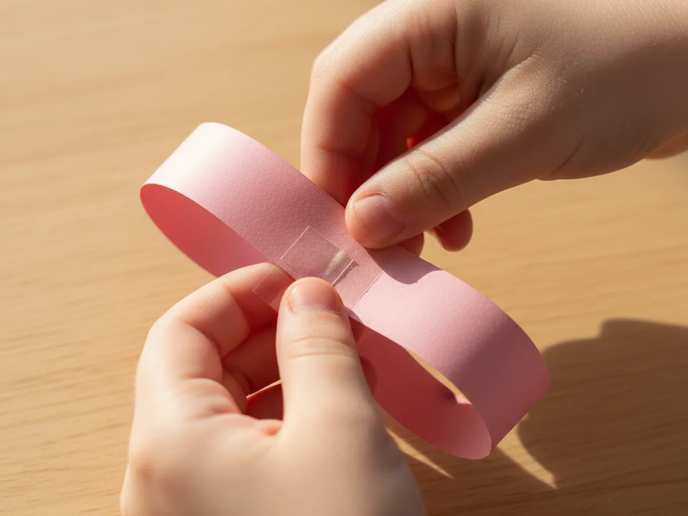
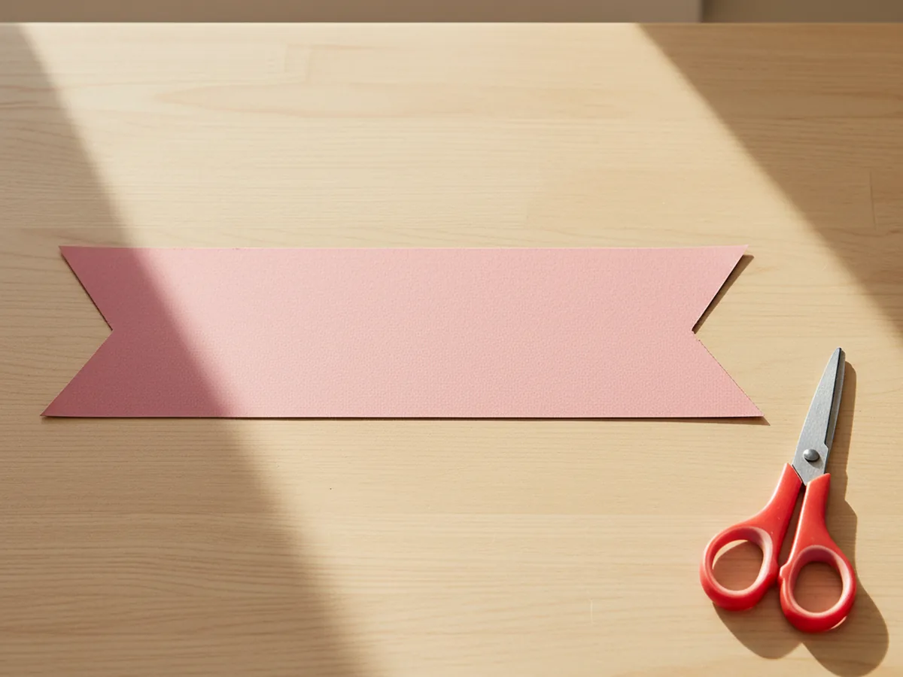
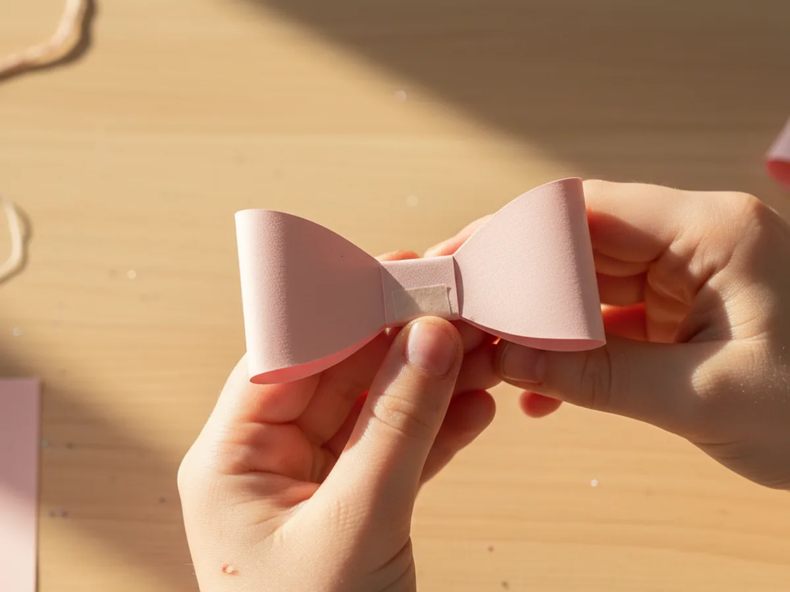
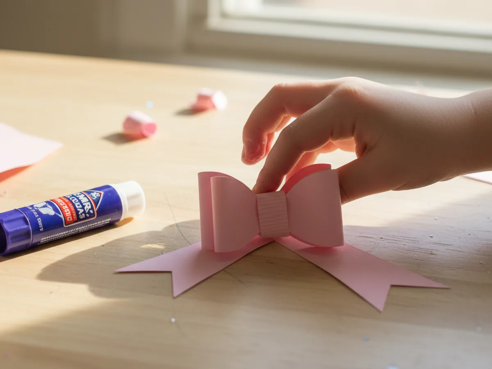
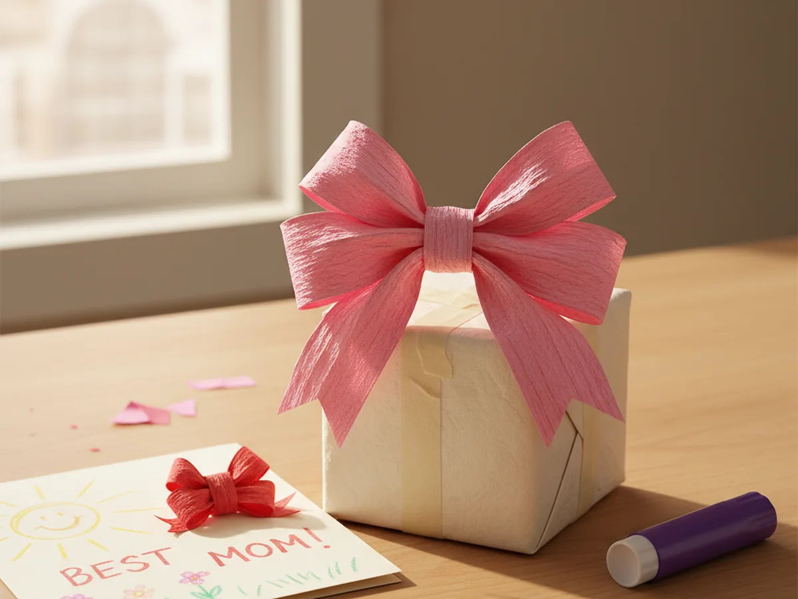

If you have ever stood in the wrapping paper aisle wishing the store-bought bows were cuter, this bow craft paper tutorial is going to feel like a tiny lifesaver. With just a few strips of cardstock, a glue stick, and about twenty-five minutes at the kitchen table, you and your child can make the sweetest little paper bows for gifts, cards, hair clips, or just to tape to a doorknob and make someone smile. 🎀
The best part is that this paper bow craft looks fancy but is genuinely beginner-friendly. Even a four year old can pinch the loops and press the tape down, and older kids will love picking out colors and patterns. Every bow turns out a little different, which is exactly what makes a homemade one feel so much sweeter than anything from a store.
Why Kids Love This Craft
There is something almost magical about turning a flat strip of paper into a real-looking bow. For a young child, that moment when the loops puff out and the bow suddenly looks like a bow is a tiny burst of pride that they made something so pretty. Many kids will spend the next hour making one in every color they can find, and that is the whole point. This easy bow craft paper project gives them quick, repeated wins.
The activity also gives little hands gentle practice with several useful skills. Cutting straight strips, folding the paper into loops, pinching the center, and pressing the tape down all build fine motor control, hand strength, and focus. Because each bow only takes a few minutes once your child gets the hang of it, the project never feels long or frustrating.
And then there is the joy of giving. A child who makes a handmade paper bow almost always wants to put it on something special for somebody they love, whether it is a grandma's birthday card, a sibling's lunchbox, or the family fridge. The result feels real, useful, and warm. 💛

What You'll Need
Here is everything you need to make this bow craft paper project at home. Lay the supplies out on the table before you sit down with your child so the activity flows smoothly and nobody has to get up to dig for the tape.
- Paper Junkie Metallic Red Cardstock (50 Sheets), shimmery and bright, perfect for fancy gift bows.
- Crayola Construction Paper (240 Sheets, 12 Colors), a budget-friendly stash for everyday bows in any color.
- Fiskars 5 Inch Pointed-Tip Kids Scissors, sized for little hands cutting clean strips.
- Elmer's Disappearing Purple School Glue Sticks (30 Count), washable, twistable, and beginner-friendly.
- Scotch Permanent Double-Sided Tape, holds the loops in place instantly with no waiting for glue to dry.
- Swingline Tot Mini Stapler, optional, gives the bow center an extra secure hold.
- Silver Metal Alligator Hair Clips (50 Pack), optional, perfect if you want to turn the bow into a hair clip.
- A pencil and ruler, for measuring the paper strips evenly.
Step-by-Step Instructions
This bow craft paper tutorial is genuinely easy, even for a first-time crafter. Take it one step at a time and let your child do as much as they comfortably can. ✨
Step 1: Cut the Three Paper Strips
Start with one sheet of cardstock or construction paper in your favorite color. Use a pencil and ruler to lightly mark three strips: one long strip about eight inches by one and a half inches for the main bow loop, one medium strip about five inches by one and a half inches for the tails, and one small strip about three inches by one inch for the center band. Cut each strip out neatly. These three little pieces are the entire base of your bow craft paper project.
If your child is younger, draw the lines yourself and let them focus on the cutting. Slightly wobbly edges will not show in the finished bow at all.

Step 2: Form the Bow Loop
Take the longest strip and bring the two short ends into the middle so they meet in the center, like making a flat figure eight. The ends can overlap just a little. Hold the meeting point and pinch the middle gently with your fingers so the strip puffs out into two soft loops on either side. This pinched figure-eight shape is the heart of the simple paper bow craft.
If the loops feel too floppy, a small piece of double-sided tape where the two ends meet will hold everything in place while you pinch the center.

Step 3: Notch the Ribbon Tails
Now grab the medium strip, which will become the tails of the bow. Fold it in half once just to find the middle, then unfold it flat again. At each short end, cut a small upside-down V notch about half an inch deep. The notched ends give the strip that classic ribbon-tail look that makes the whole bow craft paper design feel finished and elegant.
Cutting the V is easier if your child lines up the scissors first while you steady the paper. The notch does not need to be perfect or symmetrical.

Step 4: Wrap the Center Band
Pick up the smallest paper strip, the three by one inch one. This is the center band that will give the bow its signature pinched-middle look. Wrap it snugly around the middle of your pinched figure-eight loop, pulling it tight enough to keep the loops puffed out on either side. Tuck the two ends of the band behind the bow and secure them with a glue stick dab or a tiny piece of double-sided tape. The neat little wrapped center is what makes the kid-friendly paper bow look truly polished.
If the center band feels tricky for small fingers, hold the loops together for your child while they wrap and press the ends down. It is a perfect two-pair-of-hands moment.

Step 5: Glue the Bow onto the Tails
Now it is time to put the whole thing together. Lay the notched tail strip flat on the table. Run a generous swipe of glue stick across the front of the bow's wrapped center band, then press the bow down onto the middle of the tail strip so the two notched ends peek out just below the loops. Hold for a slow count of ten so the glue really grips. Your handmade paper bow is officially finished.
If the bow keeps slipping, switch to a small piece of double-sided tape instead of glue. It grabs cardstock instantly and feels like cheating in the best way.

Step 6: Decorate or Display
Hold up your finished bow craft paper creation and give it the proud display it deserves. Stick it on top of a wrapped gift with a strip of tape, glue it onto the front of a homemade card, clip it onto a headband with a metal hair clip, or pin it to a paper wreath. If you want extra sparkle, your little one can dot the loops with markers, stickers, or a touch of glitter glue. The history of decorative ribbon goes back centuries, and your child has just continued that tradition in their very own way.

Variations to Try
Patterned Scrapbook Paper Bow: Instead of plain cardstock, use a sheet of patterned scrapbook paper for an extra-fancy bow. Floral prints look beautiful for spring gifts, plaid feels perfect for holidays, and polka dots are sweet for birthday packages.
Layered Double Bow: Make two bows in two different sizes using the same technique, then glue the smaller one on top of the larger one for a fuller, more dimensional look. This works wonderfully for special occasions like a graduation card or a baby shower gift.
Paper Bow Hair Clip: Glue the finished bow onto a metal alligator hair clip to instantly turn the craft into a wearable accessory. Older kids especially love this twist because they can wear what they made out to school or grandma's house.
Final Thoughts
This bow craft paper project is one of those small, sweet activities that always gives back more than you expect. It uses almost no supplies, takes less than half an hour, and leaves you with a finished handmade bow that genuinely looks gorgeous on a present. More importantly, it gives you a peaceful little stretch at the table with your child making something pretty together. 🎀
If your family makes a few of these together, pin this tutorial on Pinterest so other craft-loving mamas can find it. Happy crafting, friend.
More Crafts You'll Love
If your little one enjoyed making this paper bow, they will love these other sweet paper projects too: